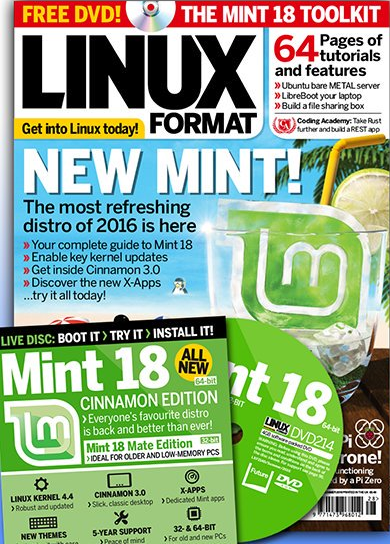
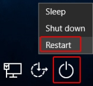

Boot from DVD

Get
LINUX FORMAT
magazine #214.
(Mint 18 edition)
Logout of Windows 10.
Insert Mint 18 DVD.

From login screen, click
Restart
with
the
SHIFT
key
held
down
!
At the
Choose an option
screen, choose
Use a device
At the
Use a device
screen, choose
Internal CD/DVD ROM Drive
At the
Linux Format DVD 214
screen, choose
Linux Mint 18 Cinnamon (64 bit)
, then
Start Linux Mint 18 Cinnamon 64-bit